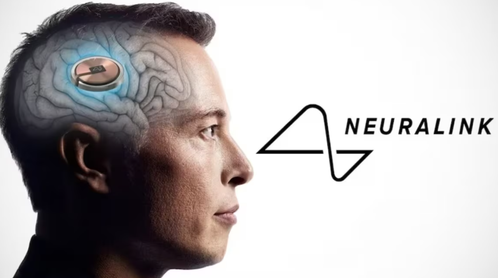

Elon Musk’s Neuralink: Bridging the Human Brain and Technology

What is Neuralink?
Neuralink is a neurotechnology company co-founded by Elon Musk, with the mission to connect the human brain directly to computers. This connection, facilitated by a tiny, implantable device, promises to revolutionize how we interact with technology and treat neurological conditions. The core of Neuralink’s technology is a chip, referred to as the N1, which can be implanted into the brain to monitor and stimulate neural activity.
The Science Behind the Neuralink Chip
At the heart of Neuralink’s technology is the concept of neural lace, a mesh of ultra-thin electrodes designed to integrate seamlessly with brain tissue. The N1 chip, approximately the size of a coin, is connected to these electrodes, which are meticulously inserted into the brain using a robotic surgical system to ensure precision and minimize damage.
Once implanted, the chip can read neural signals and, potentially, stimulate neurons. This dual capability opens up a myriad of possibilities. For instance, it can record brain activity related to movement, speech, and other functions, and it can also send electrical pulses to specific areas of the brain to influence behavior or perception.
Potential Applications
Medical Advancements
One of the most promising applications of Neuralink is in the field of medicine. The ability to monitor and influence brain activity could lead to breakthroughs in treating neurological disorders such as Parkinson’s disease, epilepsy, and even depression. By directly interfacing with the brain, the Neuralink chip could provide more precise and effective treatments than current methods, which often rely on medication with systemic effects and numerous side effects.
Enhancing Human Capabilities
Beyond medical applications, Neuralink envisions a future where brain–machine interfaces enhance human capabilities. This includes restoring movement to individuals with spinal cord injuries, enabling those with amputations to control prosthetic limbs with their thoughts, and even augmenting memory and cognitive functions. The idea is to create a symbiotic relationship between the human brain and external devices, effectively turning science fiction into reality.
Communication and Control
Neuralink could fundamentally change how we communicate and interact with technology. Imagine typing on a computer or sending a text message simply by thinking about it. This level of integration could make interfaces like keyboards and touchscreens obsolete. Moreover, such technology could empower individuals with severe disabilities to communicate and interact with their environment more freely and independently.
Ethical and Social Considerations
While the potential benefits of Neuralink are vast, the technology also raises significant ethical and social questions. Issues of privacy, security, and consent are paramount when dealing with brain data. The possibility of hacking or unauthorized access to one’s neural data is a serious concern that needs to be addressed through robust security measures and regulations.
Furthermore, the idea of enhancing human capabilities through technology brings up questions about equity and access. Who will have access to such advancements? How do we prevent a divide between those who can afford cognitive enhancements and those who cannot? These are crucial considerations that society must grapple with as the technology progresses.
The Road Ahead
Neuralink is still in the experimental stages, with animal testing being a critical step before human trials. In 2020, Neuralink showcased a pig named Gertrude with a Neuralink implant, demonstrating the device’s ability to read neural signals in real-time. This was a significant milestone, showing the feasibility of the technology in a living organism.
As Neuralink moves towards human trials, the potential implications of their success are profound. A successful implementation in humans could revolutionize medicine, human-computer interaction, and our understanding of the brain.
Conclusion
Elon Musk’s Neuralink represents a bold vision for the future, where the lines between humans and technology blur. While the road ahead is fraught with challenges and ethical considerations, the potential benefits in healthcare and human enhancement are too significant to ignore. As we stand on the brink of this new frontier, one thing is clear: Neuralink is set to spark conversations and innovations that will shape the future of humanity.
Note: The content of this article was generated by ChatGPT